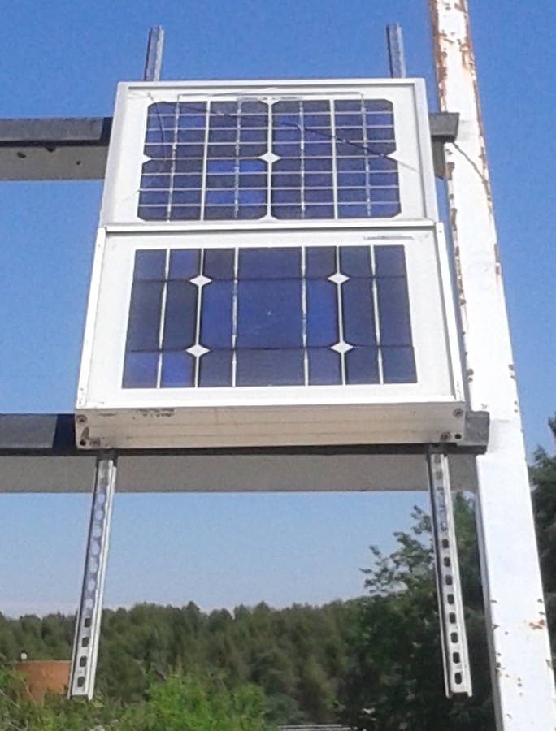
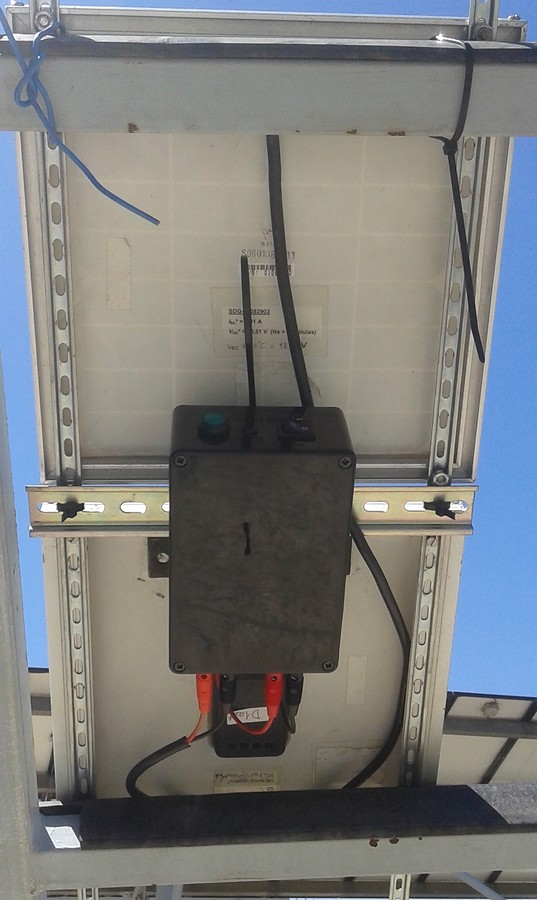

The wireless PV reference sensor
The first device I decided to build after the feasibility test was the wireless photovoltaic reference sensor. This system does not measure the PV module I want to measure, instead, it performs measurements on two calibrated solar cells whose purpose is to provide an accurate measurement of the irradiance and the temperature. These values are required later to perform the extrapolation of the I-V curve to the STC conditions according to the Spanish standard UNE-EN 60891.
Functional requirements
Before the design of the device itself, I had to establish the minimum requirements the design had to meet. The proposed device must:
- Measure the open-circuit voltage value of a calibrated solar cell which provides the cell temperature.
- Measure the short-circuit current value of a calibrated solar cell which provides the solar irradiance. Note that this will be performed with a shunt resistor to turn the current into a voltage difference, which is what is actually measured.
- Be able to communicate with the PV analyzer using radio signals to send the data measured at an appropriate frequency and range.
- Be an autonomous device, with its own power supply.
- Minimize the energy consumption, to increase the lifetime.
- Provide accurate, precise and repeatable measurement results.
- Be small in size.
- Be light in weight.
- Be low in cost.
- Include the entire required elements in an enclosure that protects them from the environment and possible accidents.
Initially there were more requirements, but some were dropped because they did not make sense, so the reference device became simpler and cheaper. The discarded requirements were:
- Measurement of the temperature of the reference box to prevent the electronics and the battery from overheating. Although this was an important feature at the beginning, it turned out to be not so useful. This is because if the box is placed behind the solar cells, it will not overheat, and it is unlikely to reach the 85 °C required to damage the electronics used in the device.
- Storage of the information on an SD card device. Once again, this didn't really make sense in this project, as there is no point of storing a lot of data about the irradiance and temperature unless you need them for a specific use.
- Real-time clock. Since the storage of the data is performed in the PV analyzer it makes sense to add this feature in that specific device and not in both of them.
Hardware components
This section of the document aims to list and describe the elements used in the design of the PV reference sensor. The components used are:
- A calibrated solar cell used to measure the temperature of the cell. To perform this task, its terminals must be left open.
- A calibrated solar cell used to measure the irradiance that reaches the solar cell. To perform this task, its terminals must be closed. Note that one panel requires the circuit to be open and the other need to be closed, so I needed two different solar cells to measure both values.
- A calibrated shunt resistor is required to turn the short-circuit current of the calibrated panel into a voltage difference signal that can be measured on the Arduino ADC. In this case the relation of the shunt resistor was 4 A = 150 mV.
- An Arduino UNO board.
- An Arduino-compatible wireless shield. Used to send the measurements to the PV analyzer using radio signals under the ZigBee protocol. It includes an XBee antenna.
- A customized protoshield compatible with the Arduino UNO board. This board is used to hold all of the electronics and their respective wiring to make it fit in a small space. The elements soldered on it include a voltage divider for the temperature signal, an operational amplifier INA114AP for the irradiance signal (including the resistors for the gain and the supply voltage capacitors), a DC-DC converter with dual output to feed the operational amplifier, a voltage divider to measure the state of charge of the battery, connectors, wiring and headers.
- A lithium-ion battery, used as the main power supply for all of the electronics. It uses 12 V and has a rated capacity of 4800 mAh. I ran a capacity test to check the actual battery capacity: 3200 mAh. Although well below the rated value, it is still a good result. It includes its own charger, and has different wires for power supply and charging.
- A LED emitter.
- An on-off switch, a push button, wires, connectors, banana plugs.
- A DIN rail structure to hold everything together and a DIN adapter that is attached at the bottom of the box.

